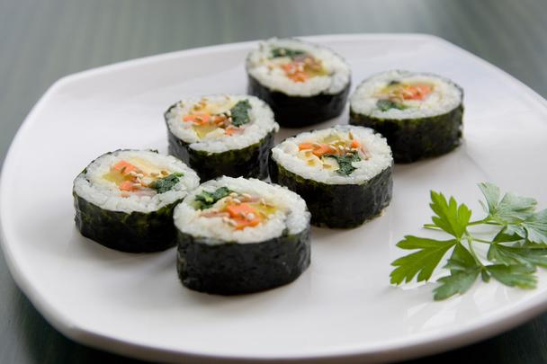
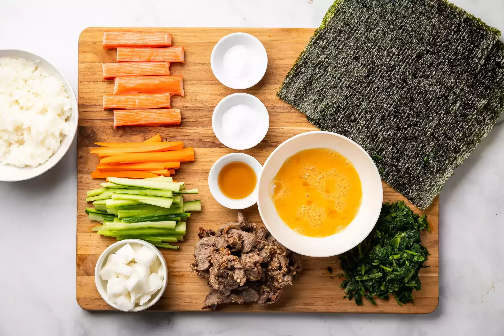
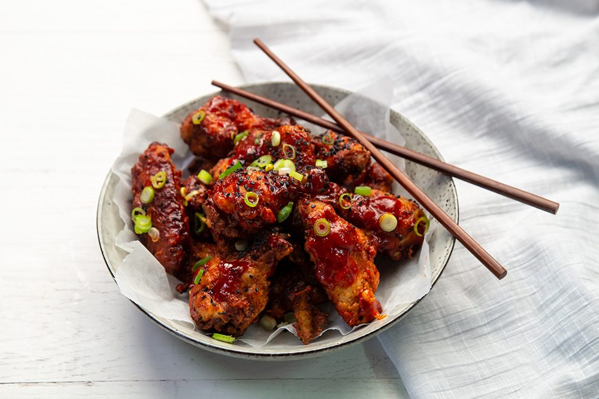
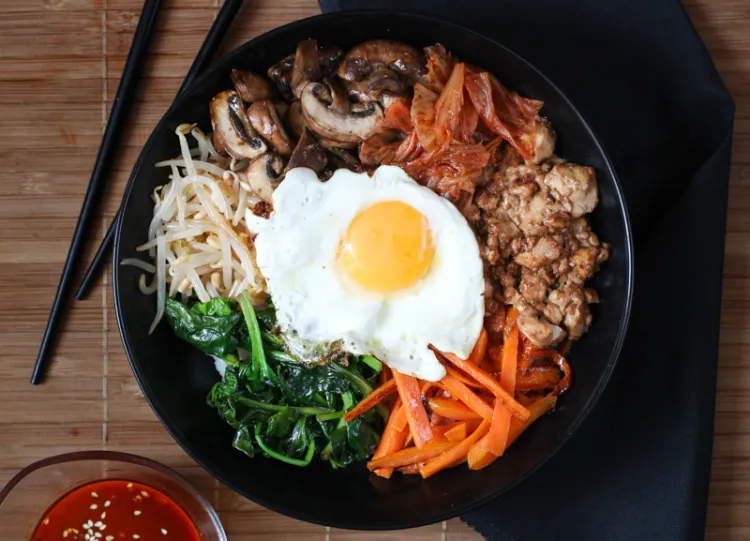

Kimbap, Maeun-dakbonggui, Bibimbap
김밥 - Kimbap

El kimbap (김밥) es un plato típico de Corea que consiste en un rollo de arroz con varios ingredientes y todo
envuelto en un alga.
Estos ingredientes van cambiando, y suelen incluir verduras marinadas o encurtidas, huevo, carne, pescado,
etc.
Kimbap (también llamado gimbap) se traduce literalmente como alga (kim) y arroz (bap) y se come en multitud de
ocasiones. Es muy típico prepararlo para llevárselo de picnic, comerlo en la calle como comida callejera o
en
cafeterías de universidades.
Ingredientes
-
Arroz
-
Alga seca
-
Atún en lata (natural)
-
Espinacas
-
Zanahorias
-
Rábano encurtido coreano (danmuji). Es difícil de encontrar, por lo que puede sustituirse por algún
encurtido, tipo pepinillos o pepino
-
Aceite de sésamo
-
Salsa de soja
-
Sal

Paso a paso para prepararlo
-
Hervir el arroz con un poquito menos de agua de lo habitual.
-
Cortar en juliana muy finita la zanahoria y el rábano encurtido.
-
Sofreir la zanahoria.
-
Sofreir las espinacas añadiendo unas gotas de aceite de sésamo, y sin juntarlas con las zanahorias.
-
Dejar enfriar los ingredientes.
-
Sobre una esterilla de bambú colocar el alga, sobre ésta el arroz extendido y finalmente, el resto de
ingredientes.
-
Con la ayuda de la esterilla, enrollar el rollo. Si es necesario, puede humedecer el extremo del alga
para que se mantenga enrollado.
-
Con un cuchillo muy afilado, corte el rollo en “bocaditos”.
-
Coja con los palillos cada uno de estos bocados, mójelos ligeramente en salsa de soja y ¡a disfrutar!
Si te gusta la comida coreana, seguro que te encantará el kimchi. Si es así, no dudes
en añadirlo para conseguir un delicioso kimchi kimbap.
매운닭봉구이 - Maeun-dakbonggui, pollo picante estilo coreano

Increíblemente crujiente, el dakgangjeong (닭강정) también llamado ganjeong chikin,
es un plato de pollo frito crocante y glaseado en una salsa picante agridulce, que es muy popular en Corea.
El dakgangjeong es un plato coreano de pollo que se fríe dos veces y luego se saltea en una salsa dulce, agria,
picante, espesa y ligeramente pegajosa.
Ingredientes
-
1,2 kg de pollo troceado
-
2 cucharadas de sal
-
1/4 cucharadita de pimienta blanca
-
1/2 taza de harina de trigo (120g)
-
1/2 taza de maicena (120g)
-
1/3 taza de salsa de soja (75ml)
-
1/4 taza de azúcar (50g)
-
2 cucharadas de vinagre de manzana (30ml)
-
2 cucharadas de Pasta de chili coreano (30ml)
-
2 dientes de ajo
-
Semillas de sésamo
Paso a paso para prepararlo
-
Colocar el pollo troceado en un cuenco, salpimentarlo y echar la harina de trigo y la maicena. Rebozar bien
el
pollo.
-
Calentar el aceite en un wok o en una sartén. Es mejor freírlo por tandas, así que eche la primera tanda de
pollo y fríalo unos 10 minutos aproximadamente,debe quedar bien frito por todos los lados.
-
Sacar el pollo y dejarlo en un colador o encima de papel de cocina mientras se fríe la siguiente tanda.
-
Para que el pollo quede bien crujiente, hay que freírlo dos veces. Vuelva a echar la primera tanda al wok o
a la sartén.
-
Para la salsa, primero hay que dorar el ajo.
-
Añadir la salsa de soja, el azúcar, el vinagre y la pasta de chili coreano. Déjelo cocinar a fuego medio
unos
5-10 minutos para que se disuelva el azúcar.
-
Echar el pollo y mezclarlo con la salsa.
-
Cuando lo sirva, puede espolvorear semillas de sésamo.
비빔밥 - Bulgogi Bibimbap

Uno de los platillos coreanos más clásicos y más fáciles de hacer. El bibimbap se puede comer a cualquier hora
del día y es perfecto para casi toda ocasión,
es llenador y saludable.
Su mezcla de arroz, vegetales, huevo y carne lo hacen una comida perfecta en un solo tazón.
Ingredientes
-
1 y 1/2 taza de arroz blanco cocido
-
1 paquete de espinacas
-
1 zanahoria
-
1 zucchini
-
3 tazas de brotes de soja
-
100 g de hongos
-
1 y 1/2 taza de cebolla en juliana
-
2 huevos
-
200 g de carne picada en tiras
-
Sal y pimienta, a gusto
-
Semillas de sésamo
-
Salsa de soja
-
Aceite de vegetal
-
Gochujang
(pasta de ají picante)
Paso a paso para prepararlo
-
Preparar el arroz. Poner en una cacerola una taza de arroz, dos de agua y cocinar a fuego alto.
Cuando
empiece a hervir, bajar el fuego y tapar.
Cocinar a fuego mínimo durante 20 minutos. Retirar de la hornalla y reservar.
-
Sazonar las tiras de carne agregando un chorro de salsa de soja, aceite de sésamo, semillas de sésamo, media
cucharada de azúcar, pimienta negra y sal.
Reservar mientras se preparan los vegetales para que vaya absorbiendo el sabor.
-
Blanquear las espinacas y los brotes de soja por separado. Cortar la cocción en agua fría, estrujarlo muy
bien con la mano para sacarle todo el agua.
Condimentar con sal, aceite de sésamo y sésamo tostado.
-
Cortar la zanahoria, el zucchini, la cebolla y los hongos en julianas.
-
Saltear todas las verduras por separado a fuego alto en una sartén. Para el salteado, agregar una mezcla de
media cucharada de azúcar diluida en dos cucharadas de aceite de soja,
una cucharada de aceite de sésamo y una cucharada de cebollín. Cocinar cada verdura durante unos 5 minutos.
Reservar por separado.
-
Saltear la carne en una sartén a fuego alto. Freír los huevos dejando las yemas tiernas.
-
En un plato profunda poner un colchón de arroz. luego distribuir los vegetales en montoncitos formando un
círculo, sin mezclarlos.
Poner encima los huevos fritos. Agregarle la salsa gochujang y servir.
 Cómo hacer Kimbap?
Cómo hacer Kimbap?